前言
為什麼Google Cloud 延伸出一個Private Kubernetes Cluster[5]？如果你有建製GKE經驗，你會發現Worker Node其實就是用到GCE(instance)資源，這些VM預設時會使用到public IP，它的用意就是提供Node Port expose，好讓Pods可以對外溝通，亦或者是VM本身的patch update。
Public IP本意是就是為了跟外部溝通用，但Node Port的機制，會將主機一直曝露在外！嚴然也是一大風險，因此，Google Cloud提供一種沒有public IP Worker Node，減少主機公開的隱憂，透過VPC-native, Google Private Access[6]，具體作法是將群集(Cluster)中的節點(Worker Node)僅具有內部IP地址，這意味著，節點和Pod與Internet隔離。此外，節點內部IP地址包括(Pod, Service Subnet)，透過Alias IP(Secondary CIDR)[7] 是可以連結來自的GCP VPC IP地址範圍，最後構成Pod IP地址和Service IP地址來自同一處VPC(子網路)定義出的Subnet IP地址範圍。
問題來了，當你沒有外部IP，Master Node API Server 我們要如何去溝通呢？我們知道GKE即然代管了Control plane，那麼它也是用public API 供access，現在缺了VM External IP，我們要如何與Master Node溝通？ 答案：就是啟用GKE 授信網路(Authorized networks)，僅讓特定的IP, CIDR操作kubectl命令。
原文說明
By default, when a Compute Engine VM lacks an external IP address assigned to its network interface, it can only send packets to other internal IP address destinations. You can allow these VMs to connect to the set of external IP addresses used by Google APIs and services by enabling Private Google Access on the subnet used by the VM’s network interface.
Private Google Access also allows access to the external IP addresses used by App Engine, including third-party App Engine-based services.
To view the eligible APIs and services that you can use with Private Google Access, see supported services in the Private Google Access overview.
See Private Access Options for Services for background information about Private Google Access and other private connectivity options offered by Google Cloud.
實作項目有
- 建立Private GKE 叢集，採用Alias IP
- GKE 叢集啟用 Authorized networks
- 驗證kubectl：非授權網段、授權網段存取結
1. 建立Private GKE 叢集
step1. 叢集建立
透過參數指定，將叢集建立為一個內部VPC-native IP。同時也同定義master-ipv4-cidr
- –enable-private-nodes \
- master-ipv4-cidr 172.16.0.16/28 \
- –enable-ip-alias
1 | #1 Creating a private cluster |
2 | |
3 | gcloud beta container clusters create private-cluster \ |
4 | --enable-private-nodes \ |
5 | --master-ipv4-cidr 172.16.0.16/28 \ |
6 | --enable-ip-alias \ |
7 | --create-subnetwork "" |
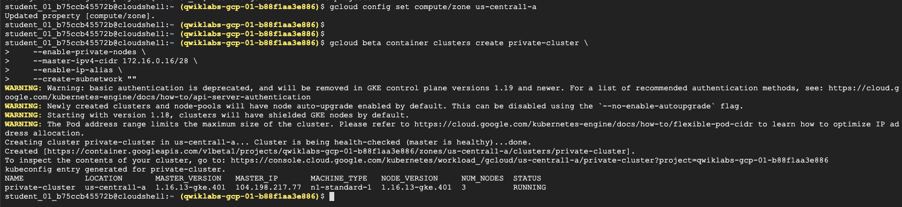
step2. Private subnet
當你建立Private cluster後，若沒有指定 --secondary-range, 上面的叢集使用的是 --create-subnetwork ""，因此GKE會自動於VPC建立屬於Pod, Service專用的Subnet IP Range
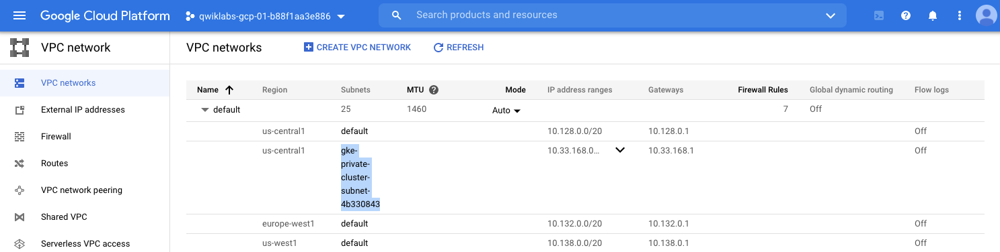
1 | #1 Viewing your subnet and secondary address ranges |
2 | |
3 | gcloud compute networks subnets list --network default |
4 | |
5 | #2 get information about created subnet |
6 | gcloud compute networks subnets describe gke-private-cluster-subnet-4b330843 --region us-central1 |
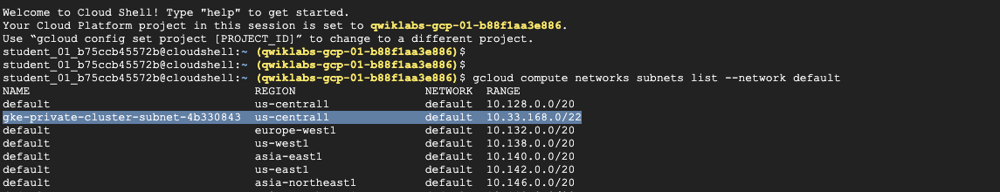
補充說明：Alias IP / Secondary VPC
原本的k8s中，pod, service IP range皆是由k8s中自行定義，現在Alias IP可以讓你叢集得到GCP VPC 上的網路，使用VPC(內部的網路)直達Managed Master control plane。如圖中在原有VPC Subnet-A 定了二個新的subnet供GKE Pod(藍色部份), GKE service(紅色部份)作使用
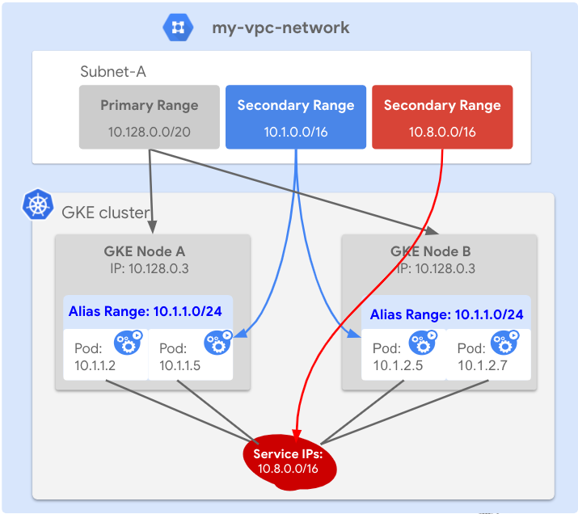
故設定為
secondaryIpRanges
- ipCidrRange:
10.36.0.0/14 - ipCidrRange:
10.33.176.0/20
這邊很重要的就是，我們透過 Private Google Access[4] 走向master node access
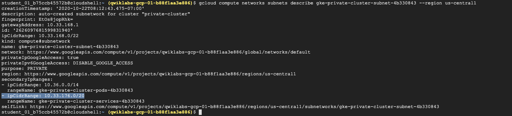
補充說明：檢視叢集設定
Cluster IP
10.33.180.156
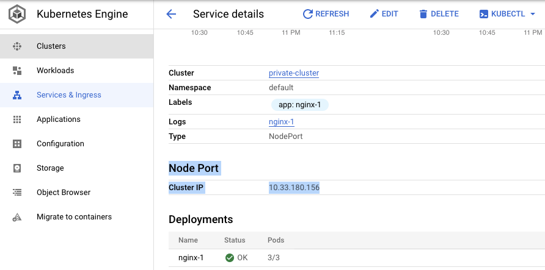
review NETWORKING
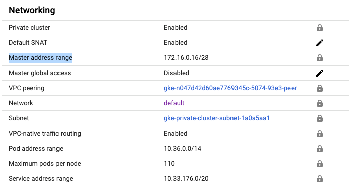
補充說明：自動化建立Subnetwork for Pod, Service Range
當你建立Private cluster後，若沒有指定 --secondary-range my-svc-range=10.0.32.0/20,my-pod-range=10.4.0.0/14, GKE會自動於VPC建立屬於Pod, Service專用的Subnet IP Range
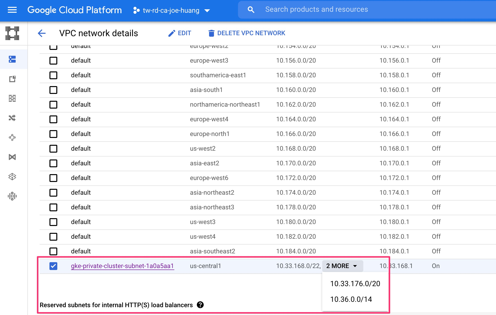
範例是手動補齊定義secondary range
1 | gcloud compute networks subnets create my-subnet \ |
2 | --network default \ |
3 | --range 10.0.4.0/22 \ |
4 | --enable-private-ip-google-access \ |
5 | --region us-central1 \ |
6 | --secondary-range my-svc-range=10.0.32.0/20,my-pod-range=10.4.0.0/14 |
2. 啟用授信網路於跳板機 | Master authorized networks in VM’s public IP
step1. 建立跳板機
1 | gcloud compute instances create source-instance --zone us-central1-a --scopes 'https://www.googleapis.com/auth/cloud-platform' |
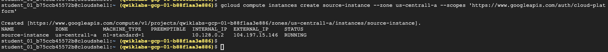
step2. 設定叢集僅接受跳板機存取
1 | gcloud container clusters update private-cluster \ |
2 | --enable-master-authorized-networks \ |
3 | --master-authorized-networks [MY_EXTERNAL_RANGE] |
4 | |
5 | #104.197.15.146 |
6 | # * your CIDR range is natIP/32 |
7 | |
8 | gcloud container clusters update private-cluster \ |
9 | --enable-master-authorized-networks \ |
10 | --master-authorized-networks 104.197.15.146/32 |
確認authorized-networks 啟用
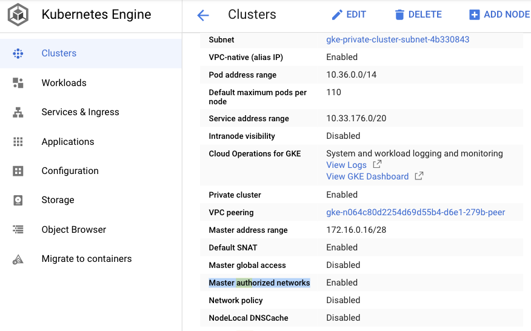
step3. 確認Authorize your external address range
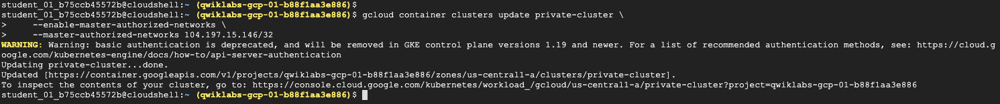
補充說明：GKE 被託管的Master node
- 因為GKE 被託管的master node都是提供public endpoint[3]，供kubectl 呼叫
- 現在pricate cluster部署，把worker node ip抽掉，所以我們改用Private Google Access去存取 master node
Public endpoint[3]
This is the external IP address of the control plane. By default, tools like kubectl communicate with the control plane on its public endpoint. You can control access to this endpoint using authorized networks or you can disable access to the public endpoint.
下面中間虛線的部份即為 Private connectivity
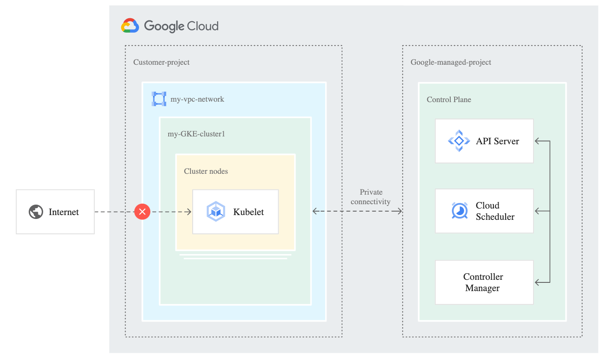
而文章開頭提到Alias IP, 與Private Google Access都是為了解決虛線的部份
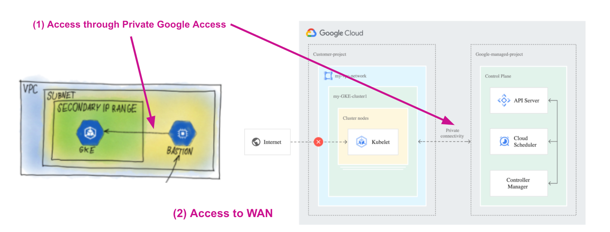
step4. 檢視已加入的受信的網路
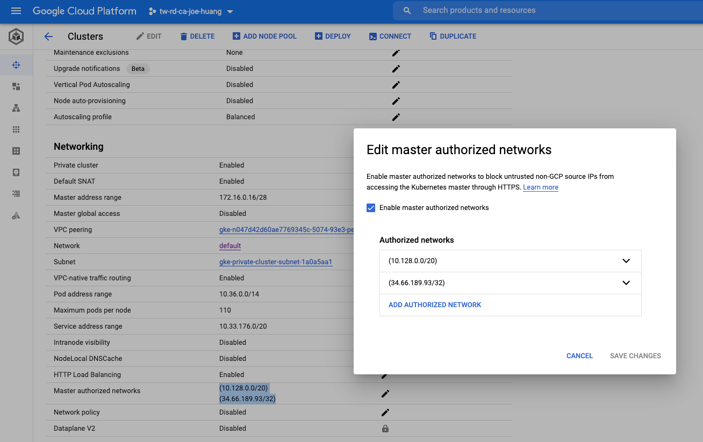
3. 測試連線能力 by kubectl
step1. 跳板機
- 開啟新的測試機
- 安裝kubectl 指令
1 | gcloud compute ssh source-instance --zone us-central1-a |
2 | gcloud components install kubectl |
step2. 從測試機上存取GKE
1 | gcloud container clusters get-credentials private-cluster --zone us-central1-a |
2 | |
3 | kubectl get nodes --output yaml | grep -A4 addresses |
結果，可以看到正常提取worker node
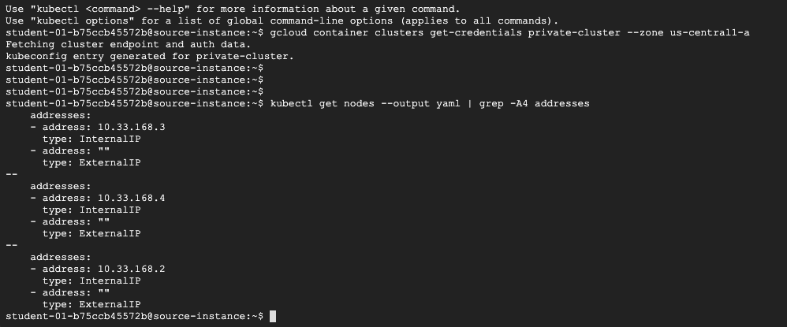
補充測試：master-authorized-networks $CIDR
雖然，master-authorized-networks $CIDR參數上說明可設定自已的IP範圍，但這個CIDR不能套用在整個GCP VPC，也就是不能讓整段 IP range 一起存取master node
1 | CIDR1=10.128.0.0/20 |
2 | |
3 | gcloud container clusters update private-cluster \ |
4 | --enable-master-authorized-networks \ |
5 | --master-authorized-networks $CIDR1,$CIDR2 |
step1. 取得VM VPC Range
VM VPC
- 10.128.0.0/20
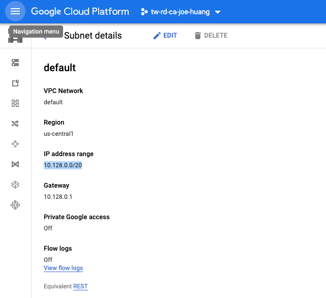
IF no add Authorized NET(before adding)
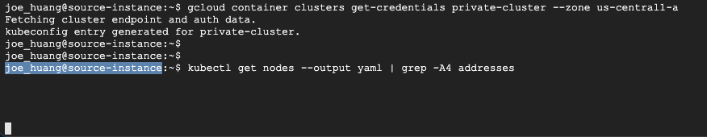
step2. 結果失敗，不能存取叢集
VM-2 kubectl不行取得 managed master control plane 35.238.15.237
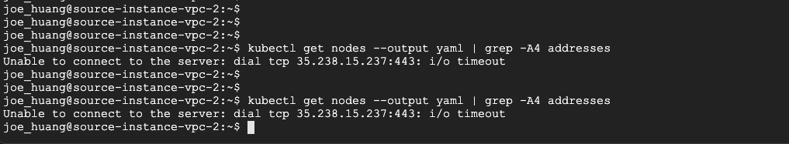
Reference
[1] https://cloud.google.com/kubernetes-engine/docs/concepts/private-cluster-concept
[2] https://developers.google.com/identity/protocols/oauth2/scopes
[3] https://cloud.google.com/kubernetes-engine/docs/concepts/private-cluster-concept
[4] https://cloud.google.com/vpc/docs/configure-private-google-access
[5] https://cloud.google.com/kubernetes-engine/docs/how-to/private-clusters
[6] https://cloud.google.com/vpc/docs/configure-private-google-access